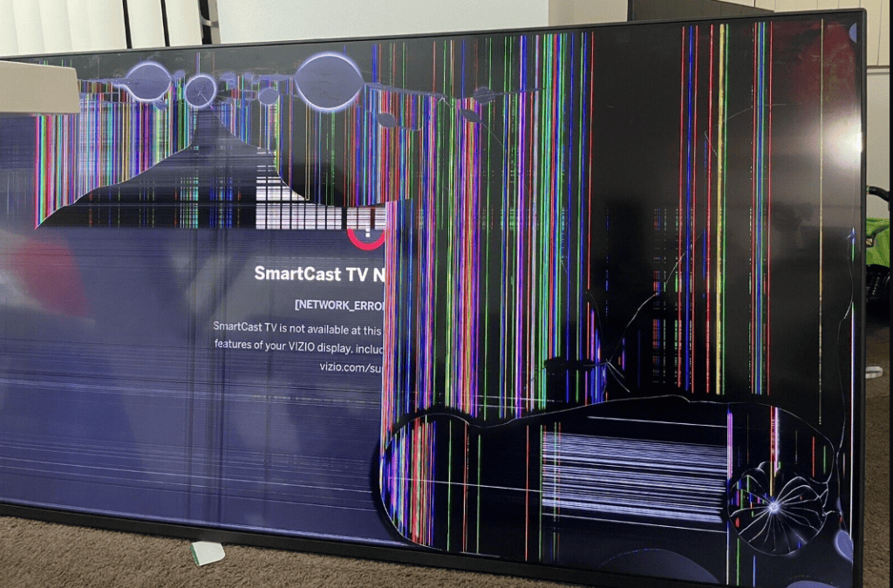

Is your home entertainment setup down? Whether your display screen goes totally dark while the system audio remains audible, your smart hub encounters random loading loops, or lightning surges leave the panel completely unresponsive — MyFixer provides certified consumer electronics repair.
Operating straight from our localized field units, our technicians travel daily into Centurion, Pretoria, Johannesburg, Sandton, Randburg, Midrand, and Roodepoort. Review our Google Business channel maps for live community reviews and diagnostic appointment availability.
Modern display electronics call for precise high-frequency testing tools. Our diagnostic squads carefully trace motherboard voltage limits, check T-Con synchronization lines, and repair localized firmware layers across standard LED panels, high-end QLED structures, and advanced OLED home theater matrices. We maintain specialized parts networks to support all popular tier-one brands, including Samsung smart TVs, LG displays, Hisense, Sony, and TCL configurations.
Replacing burnt internal LED edge backlight array strips, fixing failing inverter circuits, and correcting timing boards.
Replacing blown internal driving speakers, tracking broken digital optical links, and repairing audio IC chips.
Reflashing corrupt system firmware, replacing internal Wi-Fi adapter cards, and clearing app memory locks.
Replacing ruptured capacitors on switch-mode power boards, resetting blown fuses, and repairing standby circuits.
Bonding loose flexible tab ribbon cables and repairing horizontal scanning paths on the display matrix.
Resoldering loose high-definition HDMI inputs, replacing cracked USB ports, and fixing legacy AV blocks.